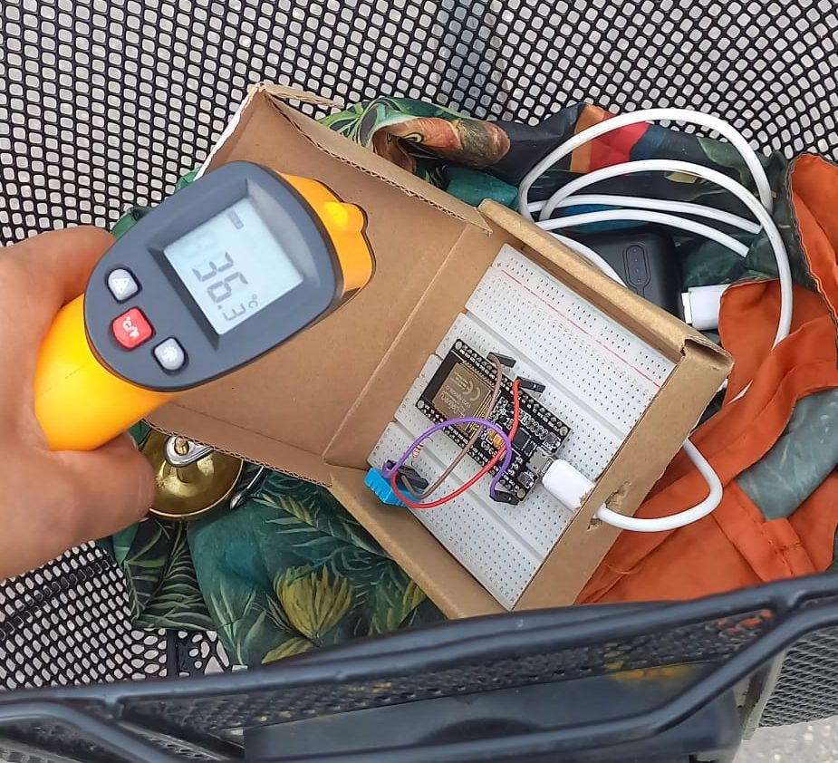
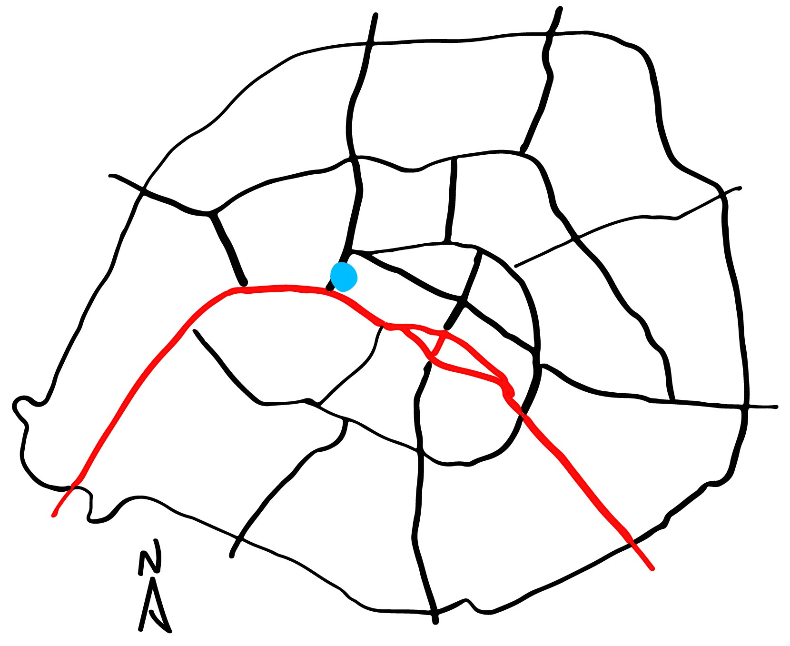
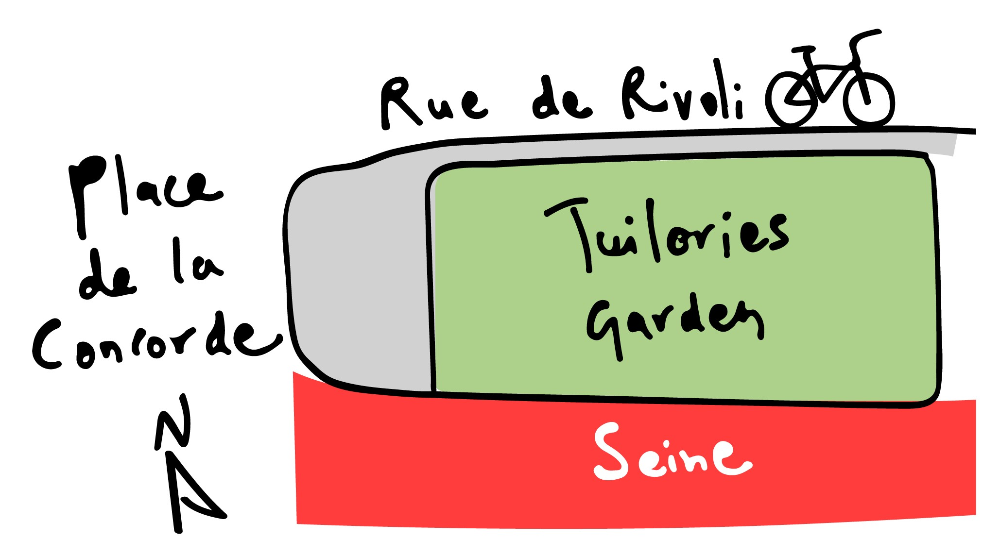
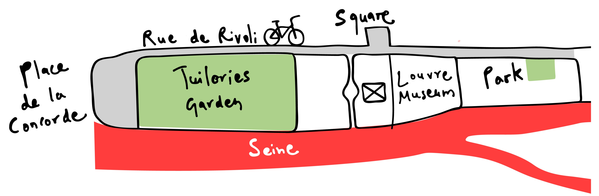
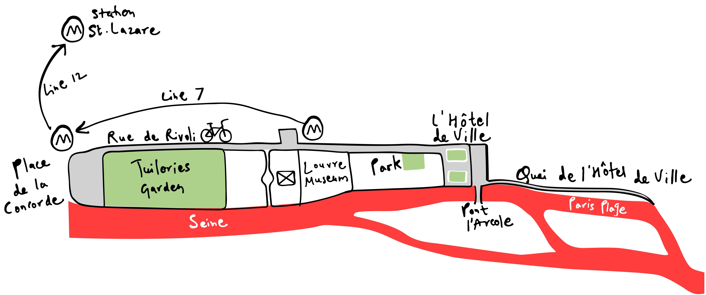
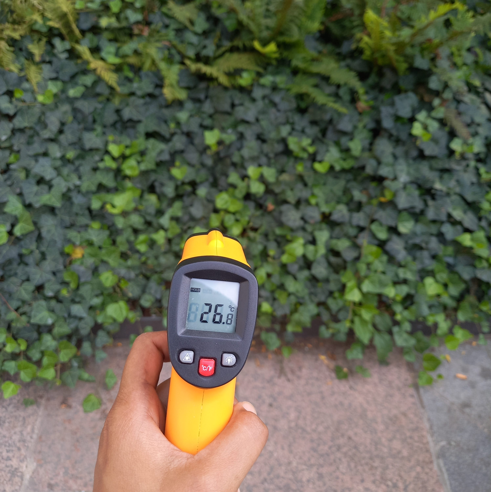

Public places in Paris during heatwave - hot or not?
July 18, 2026
As Paris entered its third canicule or heatwave of the summer, temperatures on Bastille Day was forecasted to reach 35°C (95°F) with an orange heat alert. While news reports have highlighted the failure of Parisian housing stock, built for a climate that no longer exists, resident influencers have gone viral for frying eggs on their windowsills to monetize the purchase of new air conditioners. Trapped in one such apartment, where my room temperature soared to 40°C, I noticed many Parisians seeking refuge either in their neighbourhood public spaces or in air-conditioned cafes.
In terms of organising its public spaces, Paris has been a frontrunner in designing climate resilient and adaptive urbanism, especially with the lessons learned from a fatal heatwave over 20 years ago in 2003 that killed nearly 15,000 people across the nation. Some of the ambitious measures Paris has implemented so far are:
- Forestification of public spaces with local and diverse flora, paired with shaded seatings.
- Drinking water fountains and installation of public misting systems for cooling.
- Rapid expansion of bike lane network and cycling infrastructure, especially post COVID-19, that has significantly shifted the model choice of commuting from cars to biking for shorter trips. It has simultaneously brought down air pollution levels and transformed car parking spaces for better public use.
- Promotion of 15-minutes urbanism - a feature already intrinsic to the dense and diverse land use of french cities that shortens the need for longer trips, especially when supported by walkable and bicycle-friendly streets.
- Pedestrianising hundreds of streets and transforming 500 streets as “garden roads” across the city.
- Adoption of an anti-pollution fare that allows riding public transportation at a reduced cost on days when a heatwave or very high levels of air pollution are declared. This prevents relapse to private vehicles as well as reduces exposure to environmental stressors during commuting by non-motorised modes of transport.
However, resistance to radical urban projects and a lack of political urgency continue to slow down efforts to cool the city. So, are these measures already enough to mitigate the effects of the ongoing sweltering heat?

With that in mind, I designed a DIY setup to record and compare the thermal exposure in some traditional and newly transformed public spaces in the city centre. I mounted a DHT11 sensor on my bicycle and connected it to my phone's GPS to record geolocated ambient temperature and humidity in real time every two seconds, as I rode along bike lanes and walked through parks. I also decided to ride a couple of metro lines, wondering if the underground system would be any more comfortable than biking or walking during a heatwave. Additionally, I picked up my husband's pizza-oven thermometer gun to record surface temperature on bike lanes, footpaths, and shaded and unshaded public spaces.
Route Design
The day was July 14, 2026, a national holiday marking Bastille Day. Temperatures were forecast to peak between 16:00 and 18:00, with light winds and partly cloudy skies.

Place de la Concorde in blue, the river Seine in red
I began my survey from Place de la Concorde, the largest square in the city that adorns an Egyptian obelisk, a few statues, giant fountains and a view of the Eiffel Tower. Historically used as a site for public executions, today this immense concrete and asphalt square occasionally hosts public events (without guillotines), and primarily functions as a major intersection for vehicular circulation. With no intuitive channelisation, this spot is a top-tier navigational challenge for novice cyclists.

Place de la Concorde and Tuileries Garden between Rue de Rivoli and the Seine River
Crossing this 360-m long square on foot or by bike in sweltering heat without risking heat exhaustion is possible with a quick visit to the adjacent Tuileries Garden. Located along the Seine river, this garden is one of the largest parks in the city with flower beds, ponds, manicured tree-lined pathways, and plenty of seating areas. I walked through a few parts of the park to compare temperatures under the wooded areas, along the sandy grand axis running east-west, and the spaces surrounding one of the larger ponds.

My next stop was Rue de Rivoli, an iconic Haussmannian boulevard leading to the famous Louvre Museum. Once infested with heavy car traffic, it is now largely reserved for cyclists and pedestrians, a bold post-COVID tactical urbanism experiment that was made permanent after its success, with up to 20,000 cyclists using the street daily last year.
I then cycled through the forecourt of the Louvre Museum which is a large open square dominated by the iconic glass pyramid. Although this expansive public space offers plenty of seating areas, it notably has no vegetation to provide shade for the visitors.
I went ahead and also inspected smaller public spaces around the museum, taking a quick walk to a square across from the Louvre Museum that was temporarily used as an exhibition space, followed by a visit to a tiny park surrounding Saint-Jacques Tower, about a kilometer further down the street.

My next stop was the city hall or Hôtel de Ville, another important landmark along Rue de Rivoli with a large square serving as a gathering space. The square has very recently undergone a redevelopment, with around 30% of its surface area transformed into dense, tall vegetation accompanied by benches underneath. I recorded readings while biking through the newly grown forêt urbaine and the remaining open concrete areas before exiting toward Pont l'Arcole, a bridge that traverses the Seine, and then descending to another popular public space project called Paris Plages.
Paris Plages has been a successful public space initiative since its conception in 2002, when the city decided to convert an expressway along the right bank of the Seine into an urban beach. Despite the heatwave, hundreds of Parisians were unwinding, playing music or taking a dip in the newly opened swimming area in the river.
I exited the Paris Plages by climbing back to the main street, Quai de l'Hôtel de Ville, and continued cycling along the protected bike lane toward Louvre-Rivoli metro station. From there, I jumped on the air-conditioned Line 1 to reach Place de la Concorde station. Then I hopped onto Line 12, which was not air-conditioned and relied on natural ventilation through open windows, to reach Saint Lazare Station - all while using the discounted tickets offered by the forfait anti-pollution.

So, how well did all these public spaces withstand the heatwave?
While the meteorological forecast reported 35°C in Paris with light winds, partly cloudy skies and low humidity (around 21%) during peak hot hours, the microclimatic experience varied significantly across different land uses and their built materials.
As per the sensor records, humidity remained low, ranging between 10% to 29%. The ambient temperature ranged from 35°C to 38.8°C, whereas surface temperature varied widely between 24.4°C to 58.6°C. This substantial difference between surface and air temperature coupled with wind speed strongly influenced the thermal comfort across these public spaces.
How hot?
Cycling and navigating the first landmark, Place de la Concorde was far from a physically pleasant experience. The square recorded both the highest (38.8°C) as well as lowest (35.4°C) air temperature albeit this 3.4°C difference in temperature was not felt considerably.
Cycling along Quai de l'Hôtel de Ville was similarly uncomfortable, with mean air temperature of around 37.8°C and surface temperature reaching up to 56.4°C on the unshaded bike lane. Despite its proximity to the Seine, the cooling effect of the river did not reach this street, potentially offset by the heat absorbed by dark asphalt and populated by car traffic.

Observations from Rue de Rivoli were interesting with air temperatures at 37°C±std dev°C, but surface temperature varying dramatically between footpaths and bike lanes. The footpath along the edge of Tuileries Garden was noticeably cooler, with surface temperature at 32.8°C, and was more comfortable to walk on, especially in the shaded areas. In contrast, bake lanes exposed to direct sunlight reached up to 58.6°C. However, the continuous airflow along the street, together with low relative humidity (21%), helped make cycling a less unpleasant experience despite the high temperatures.
The exposed concrete areas in front of the Louvre Museum and Hôtel de Ville were particularly harsh with surface temperatures reaching upto 51°C, discouraging people to use these parts and leaving most of the seating places unoccupied. Parts of the Pont l'Arcole were similarly too warm for prolonged use, with surface temperatures reaching upto 50°C despite its proximity to the Seine. Nonetheless, the bridge remained relatively pleasant for walking and cycling with its average air temperature of 36.8°C, a gentle breeze and a scenic view.
As expected, the fully paved square in front of the Louvre Museum remained one of the least comfortable spaces, with air temperatures around 37°C and surface temperatures reaching 52°C. At the time of observation, the square was largely avoided by tourists despite being a host of some large artworks along with seating arrangements.
Cool Places
I hypothesized that parks and natural areas would be cooler and more thermally comfortable than built public spaces. However, remarkable difference in temperature and thermal comfort was observed based on the design and vegetation structure of the parks. Overall, the coolest place was the park around Saint-Jacques Tower, with a mean air temperature of 36.2°C and surface temperatures ranging between 24.4°C and 32.4°C. The dense foliage of this small park made resting and movement a soothing experience, and thus remained crowded during the hottest hours of the day.
Tuileries Garden, on the other hand, recorded a higher air temperature of around 37.7°C. Consisting of shaded tree-lined areas as well as exposed pathways, this large park showed a significant surface temperature difference of 15°C between the shaded and sun-exposed areas. Despite the light-coloured sand, exposed pathways reached up to 48.5°C, even near the pond, whereas hang out places shaded by trees remained considerably cooler at around 33°C.
Another impressively cool location was the newly forested part of Hôtel de Ville. The densely vegetated pathways lined with seating structures, recorded air temperature of 36°C and a much lower surface temperature of up to 26.8°C, attracting many visitors to use the seating space and take a break from the heat.
The cooling effect of the Seine was most detectable at the Paris Plages, where average air temperature was 36.6°C and surface temperature dropped to 32.5°C in shaded areas. However, unshaded concrete and asphalt areas still recorded surface temperatures as high as 52.2°C.


Is metro any better?
Taking advantage of the anti-pollution fare, I rode Line 1 from Louvre-Rivoli metro station to Concorde, with trains running every three minutes. Despite being air-conditioned and relatively uncrowded due to the public holiday, the carriage temperature remained around 35°C along with relatively higher humidity levels (up to 25%). On the other hand, my journey on Line 12 from Concorde to Saint Lazare station felt slightly more comfortable despite the absence of air conditioning, with humidity ranging from 11% to 29%. Although temperatures remained within a similar range to Line 1, natural ventilation through open windows improved airflow, helping to reduce thermal discomfort and excessive sweating. While I only travelled a couple of stops on each line, longer journeys during the hottest hours could potentially become just as uncomfortable as cycling outdoors, particularly in higher humidity levels and crowded conditions.
Final thoughts..
My biggest takeaway from this DIY experiment was that, during extremely hot days or a heatwave in this case, thermal comfort in outdoor public spaces is shaped not only by ambient temperature but also by the contrast between ambient and surface temperatures. This contrast is largely determined by factors such as the characteristics of the construction materials of the public space, and the design of public spaces that control both natural and artificial shading. Shading, whether provided by trees or dense built-up structures, significantly brings down the surface temperature, although air temperatures could remain relatively stable across these spaces. Furthermore, higher relative humidity could elevate wet-bulb temperature, thereby exacerbating thermal discomfort compared with hotter but drier environments.
The hottest places were those directly exposed to the sun and composed of darker surface, whereas the coolest locations were densely vegetated parks with continuous airflow. Even amongst the cooler green spaces, differences in design significantly influenced thermal comfort. Tuileries Garden, with its traditional geometric layout, offered a regal aesthetic but was not as effective at reducing heat as the wilder greening projects such as the park around Saint Jacque Tower or seating areas in front of the city hall.
Tourist magnets such as the Louvre Museum or Place de la Concorde with their common spaces covered by concrete or asphalt still behave like frying pans. While they provide a direct and clear view to the monuments, it costs health risk among visitors who may visit many such monuments in a single day.
The city is ambitiously promoting cycling to shift trips away from cars and reduce overcrowding in public transportation, with commuting short distances by bike becoming faster than other modes. So, it is important to further improve the biking experience by not just making it safer but also more pleasant in difficult weather. However, during the moments of extreme environmental stress, especially during heatwaves, the question arises if measures such as anti-pollution fare can protect the most vulnerable populations from extreme discomfort or acute health outcomes if the metros are not designed with effective cooling mechanisms.
At present, the new greening and cooling initiatives in Paris are promising and demonstrate political commitment to take adaptation and mitigation efforts against urban climate hazards. But the question remains - will Paris, an emerging pioneer of sustainable urbanism, be able to keep pace with the increasing frequency and intensity of heatwaves?
Note: 1. Ambient temperature and humidity readings from DHT11 sensor have limited accuracy and are susceptible to measurement errors. Likewise, the infrared thermometer readings are also subject to uncertainty, as surface temperature measurements can be affected by viewing angle and distance from the target. 2. True thermal comfort also depends on wind speed that I couldn't empirically measure.
Espaces publics parisiens pendant la canicule - hot or not ?
18 juillet 2026
Alors que Paris entrait dans sa troisième canicule de l'été, les températures pour le 14 juillet étaient annoncées à 35°C (95°F) avec une alerte orange à la chaleur. Alors que les reportages ont souligné l'échec du parc immobilier parisien, construit pour un climat qui n'existe plus, des influenceurs résidents sont devenus viraux en faisant frire des œufs sur leurs rebords de fenêtres pour monétiser l'achat de nouveaux climatiseurs. Coincée dans un tel appartement, où la température de ma pièce grimpait à 40°C, j'ai remarqué que de nombreux Parisiens cherchaient refuge soit dans leurs espaces publics de quartier, soit dans des cafés climatisés.
En matière d'organisation de ses espaces publics, Paris a été un précurseur dans la conception d'un urbanisme résilient et adapté au climat, notamment grâce aux leçons tirées d'une canicule mortelle il y a plus de 20 ans, en 2003, qui a tué près de 15 000 personnes dans tout le pays. Parmi les mesures ambitieuses que Paris a mises en œuvre jusqu'à présent, on peut citer :
- La forestation des espaces publics avec une flore locale et diversifiée, accompagnée de sièges ombragés.
- Fontaines d'eau potable et installation de brumisateurs publics pour le rafraîchissement.
- Expansion rapide du réseau de pistes cyclables et des infrastructures cyclables, surtout après le COVID-19, ce qui a considérablement modifié le choix modal des déplacements de la voiture vers le vélo pour les trajets courts. Cela a simultanément réduit les niveaux de pollution atmosphérique et transformé les places de stationnement automobile pour un meilleur usage public.
- Promotion de l'urbanisme du quart d'heure - une caractéristique déjà intrinsèque à l'occupation dense et diversifiée des villes françaises qui réduit le besoin de longs trajets, surtout lorsqu'elle est soutenue par des rues praticables à pied et à vélo.
- Piétonnisation de centaines de rues et transformation de 500 rues en « rues-jardins » à travers la ville.
- Adoption d'un forfait anti-pollution qui permet d'utiliser les transports publics à un coût réduit les jours de canicule ou de très forte pollution atmosphérique. Cela évite un recours aux véhicules privés et réduit l'exposition aux facteurs de stress environnementaux lors des déplacements par modes de transport non motorisés.
Cependant, la résistance aux projets urbains radicaux et le manque d'urgence politique continuent de ralentir les efforts pour rafraîchir la ville. Alors, ces mesures sont-elles déjà suffisantes pour atténuer les effets de la chaleur accablante actuelle ?
Dans cette optique, j'ai conçu un montage DIY pour enregistrer et comparer l'exposition thermique dans certains espaces publics traditionnels et récemment transformés du centre-ville. J'ai monté un capteur DHT11 sur mon vélo et je l'ai connecté au GPS de mon téléphone pour enregistrer la température ambiante et l'humidité géolocalisées en temps réel toutes les deux secondes, en pédalant sur les pistes cyclables et en marchant dans les parcs. J'ai aussi décidé de prendre quelques lignes de métro, me demandant si le réseau souterrain serait plus confortable que le vélo ou la marche pendant une canicule. De plus, j'ai utilisé le pistolet thermomètre à pizza de mon mari pour mesurer la température de surface sur les pistes cyclables, les trottoirs, et les espaces publics ombragés et non ombragés.
Conception du parcours
Le jour choisi était le 14 juillet 2026, jour férié national marquant la fête de la Bastille. Les températures devaient culminer entre 16h et 18h, avec des vents légers et un ciel partiellement nuageux.
Place de la Concorde en bleu, la Seine en rouge
J'ai commencé mon relevé depuis la Place de la Concorde, la plus grande place de la ville qui arbore un obélisque égyptien, quelques statues, des fontaines géantes et une vue sur la tour Eiffel. Historiquement utilisée comme lieu d'exécutions publiques, cette immense place de béton et d'asphalte accueille aujourd'hui occasionnellement des événements publics (sans guillotines) et sert principalement de carrefour majeur pour la circulation automobile. Sans canalisation intuitive, cet endroit représente un défi de navigation de premier ordre pour les cyclistes débutants.
Place de la Concorde et jardin des Tuileries entre la Rue de Rivoli et la Seine
Traverser cette place de 360 m à pied ou à vélo par une chaleur accablante sans risquer un coup de chaleur est possible avec une visite rapide au jardin des Tuileries adjacent. Situé au bord de la Seine, ce jardin est l'un des plus grands parcs de la ville avec des parterres de fleurs, des bassins, des allées arborées bien entretenues et de nombreux espaces de repos. J'ai parcouru quelques parties du parc pour comparer les températures sous les zones boisées, le long du grand axe sablonneux est-ouest, et les espaces entourant l'un des plus grands bassins.
Mon prochain arrêt était la Rue de Rivoli, un boulevard haussmannien emblématique menant au célèbre musée du Louvre. Autrefois envahie par une circulation automobile dense, elle est aujourd'hui largement réservée aux cyclistes et aux piétons, une expérience audacieuse de tactique urbaine post-COVID rendue permanente après son succès, avec jusqu'à 20 000 cyclistes l'empruntant quotidiennement l'année dernière.
Je me suis ensuite rendue au parvis du musée du Louvre, une grande place ouverte dominée par la célèbre pyramide de verre. Bien que cet espace public spacieux offre de nombreux espaces de repos, il ne dispose d'aucune végétation pour offrir de l'ombre aux visiteurs.
Je suis allée inspecter des espaces publics plus petits autour du musée, faisant un rapide tour sur une place en face du Louvre qui servait temporairement d'espace d'exposition, suivie d'une visite du petit parc entourant la tour Saint-Jacques, à environ un kilomètre plus loin dans la rue.
Mon prochain arrêt était l'hôtel de ville ou Hôtel de Ville, un autre point d'intérêt important le long de la Rue de Rivoli avec une grande place servant d'espace de rassemblement. La place a très récemment subi un réaménagement, avec environ 30 % de sa surface transformée en végétation dense et haute accompagnée de bancs. J'ai enregistré des mesures en pédalant à travers la nouvelle forêt urbaine et les zones de béton ouvertes restantes avant de sortir vers le Pont l'Arcole, un pont qui traverse la Seine, puis de descendre vers un autre projet d'espace public populaire appelé Paris Plages.
Paris Plages est une initiative d'espace public réussie depuis sa conception en 2002, lorsque la ville a décidé de convertir une voie rapide le long de la rive droite de la Seine en une plage urbaine. Malgré la canicule, des centaines de Parisiens se détendaient, jouaient de la musique ou se baignaient dans la nouvelle zone de baignade de la rivière.
Je suis sortie de Paris Plages en remontant vers la rue principale, le Quai de l'Hôtel de Ville, et j'ai continué à pédaler le long de la piste cyclable protégée jusqu'à la station de métro Louvre-Rivoli. De là, j'ai pris la ligne 1 climatisée pour rejoindre la station Place de la Concorde. Puis je suis montée dans la ligne 12, qui n'était pas climatisée et dépendait de la ventilation naturelle par les fenêtres ouvertes, pour atteindre la gare Saint-Lazare - le tout en utilisant les billets à tarif réduit offerts par le forfait anti-pollution.
Alors, dans quelle mesure tous ces espaces publics ont-ils résisté à la canicule ?
Alors que les prévisions météorologiques annonçaient 35°C à Paris avec des vents légers, un ciel partiellement nuageux et une faible humidité (environ 21 %) pendant les heures de pointe de chaleur, l'expérience microclimatique variait considérablement selon les différents usages du sol et leurs matériaux de construction.
D'après les relevés des capteurs, l'humidité est restée faible, oscillant entre 10 % et 29 %. La température ambiante variait de 35°C à 38,8°C, tandis que la température de surface variait largement entre 24,4°C et 58,6°C. Cette différence substantielle entre la température de surface et la température de l'air, combinée à la vitesse du vent, a fortement influencé le confort thermique dans ces espaces publics.
Quelle chaleur ?
Pédaler et naviguer jusqu'au premier point d'intérêt, la Place de la Concorde, était loin d'être une expérience physiquement agréable. La place a enregistré à la fois la température de l'air la plus élevée (38,8°C) et la plus basse (35,4°C), bien que cette différence de 3,4°C n'ait pas été ressentie de manière significative.
Pédaler le long du Quai de l'Hôtel de Ville était tout aussi inconfortable, avec une température moyenne de l'air d'environ 37,8°C et une température de surface atteignant 56,4°C sur la piste cyclable non ombragée. Malgré sa proximité avec la Seine, l'effet rafraîchissant du fleuve n'atteignait pas cette rue, potentiellement compensé par la chaleur absorbée par l'asphalte sombre et la circulation automobile.
Les observations sur la Rue de Rivoli étaient intéressantes avec des températures de l'air à 37°C±écart-type°C, mais la température de surface variait considérablement entre les trottoirs et les pistes cyclables. Le trottoir longeant le jardin des Tuileries était nettement plus frais, avec une température de surface de 32,8°C, et plus agréable à parcourir, surtout dans les zones ombragées. En revanche, les pistes cyclables exposées au soleil direct atteignaient jusqu'à 58,6°C. Cependant, le flux d'air continu le long de la rue, combiné à une faible humidité relative (21 %), a contribué à rendre le vélo moins désagréable malgré les températures élevées.
Les zones de béton exposées devant le musée du Louvre et l'Hôtel de Ville étaient particulièrement rudes, avec des températures de surface atteignant jusqu'à 51°C, dissuadant les gens d'utiliser ces parties et laissant la plupart des places assises inoccupées. Certaines parties du Pont l'Arcole étaient également trop chaudes pour une utilisation prolongée, avec des températures de surface atteignant jusqu'à 50°C malgré la proximité de la Seine. Néanmoins, le pont est resté relativement agréable pour la marche et le vélo avec sa température moyenne de l'air de 36,8°C, une brise légère et une vue pittoresque.
Comme prévu, la place entièrement pavée devant le musée du Louvre est restée l'un des espaces les moins confortables, avec des températures de l'air autour de 37°C et des températures de surface atteignant 52°C. Au moment de l'observation, la place était largement évitée par les touristes malgré la présence de grandes œuvres d'art et de sièges.
Espaces frais
J'ai émis l'hypothèse que les parcs et les espaces naturels seraient plus frais et plus confortables thermiquement que les espaces publics bâtis. Cependant, une différence remarquable de température et de confort thermique a été observée en fonction de la conception et de la structure végétale des parcs. Dans l'ensemble, l'endroit le plus frais était le parc autour de la tour Saint-Jacques, avec une température moyenne de l'air de 36,2°C et des températures de surface comprises entre 24,4°C et 32,4°C. Le feuillage dense de ce petit parc rendait le repos et le déplacement une expérience apaisante, et il est donc resté bondé pendant les heures les plus chaudes de la journée.
Le jardin des Tuileries, en revanche, a enregistré une température de l'air plus élevée, autour de 37,7°C. Composé de zones arborées ombragées ainsi que d'allées exposées, ce grand parc présentait une différence de température de surface significative de 15°C entre les zones ombragées et exposées au soleil. Malgré le sable de couleur claire, les allées exposées atteignaient jusqu'à 48,5°C, même près du bassin, tandis que les espaces de repos ombragés par les arbres restaient considérablement plus frais, autour de 33°C.
Un autre endroit impressionnamment frais était la partie récemment boisée de l'Hôtel de Ville. Les allées densément végétalisées bordées de structures de repos ont enregistré une température de l'air de 36°C et une température de surface beaucoup plus faible, jusqu'à 26,8°C, attirant de nombreux visiteurs à utiliser ces espaces pour faire une pause de la chaleur.
L'effet rafraîchissant de la Seine était le plus perceptible à Paris Plages, où la température moyenne de l'air était de 36,6°C et la température de surface descendait à 32,5°C dans les zones ombragées. Cependant, les zones de béton et d'asphalte non ombragées enregistraient encore des températures de surface aussi élevées que 52,2°C.
Le métro est-il mieux ?
Profitant du forfait anti-pollution, j'ai pris la ligne 1 de la station de métro Louvre-Rivoli à Concorde, avec des trains toutes les trois minutes. Bien qu'elle soit climatisée et relativement peu fréquentée en raison du jour férié, la température dans la rame est restée autour de 35°C avec des niveaux d'humidité relativement plus élevés (jusqu'à 25 %). En revanche, mon trajet sur la ligne 12 de Concorde à la gare Saint-Lazare était légèrement plus confortable malgré l'absence de climatisation, avec une humidité allant de 11 % à 29 %. Bien que les températures soient restées dans une fourchette similaire à celle de la ligne 1, la ventilation naturelle par les fenêtres ouvertes a amélioré la circulation de l'air, contribuant à réduire l'inconfort thermique et la transpiration excessive. Bien que je n'aie parcouru que quelques stations sur chaque ligne, des trajets plus longs pendant les heures les plus chaudes pourraient potentiellement devenir aussi inconfortables que le vélo en extérieur, en particulier avec des niveaux d'humidité plus élevés et des conditions de foule.
Réflexions finales..
Ma principale conclusion de cette expérience DIY est que, lors des journées extrêmement chaudes ou d'une canicule dans ce cas, le confort thermique dans les espaces publics extérieurs est façonné non seulement par la température ambiante mais aussi par le contraste entre les températures ambiante et de surface. Ce contraste est largement déterminé par des facteurs tels que les caractéristiques des matériaux de construction de l'espace public et la conception des espaces publics qui contrôlent l'ombrage naturel et artificiel. L'ombrage, qu'il soit fourni par les arbres ou par des structures bâties denses, réduit considérablement la température de surface, bien que les températures de l'air puissent rester relativement stables dans ces espaces. De plus, une humidité relative plus élevée pourrait augmenter la température du thermomètre humide, exacerbant ainsi l'inconfort thermique par rapport à des environnements plus chauds mais plus secs.
Les endroits les plus chauds étaient ceux directement exposés au soleil et composés de surfaces plus sombres, tandis que les endroits les plus frais étaient les parcs densément végétalisés avec une circulation d'air continue. Même parmi les espaces verts plus frais, les différences de conception influençaient significativement le confort thermique. Le jardin des Tuileries, avec sa disposition géométrique traditionnelle, offrait une esthétique royale mais n'était pas aussi efficace pour réduire la chaleur que les projets de verdissement plus sauvages comme le parc autour de la tour Saint-Jacques ou les espaces de repos devant l'hôtel de ville.
Les attractions touristiques comme le musée du Louvre ou la Place de la Concorde avec leurs espaces communs couverts de béton ou d'asphalte se comportent encore comme des poêles à frire. Bien qu'elles offrent une vue directe et dégagée sur les monuments, cela représente un risque pour la santé des visiteurs qui peuvent visiter de nombreux monuments en une seule journée.
La ville promeut ambitieusement le vélo pour déplacer les trajets de la voiture et réduire la surpopulation dans les transports publics, les déplacements de courte distance à vélo devenant plus rapides que les autres modes. Il est donc important d'améliorer encore l'expérience cycliste non seulement en la rendant plus sûre mais aussi plus agréable par mauvais temps. Cependant, lors des moments de stress environnemental extrême, en particulier pendant les canicules, la question se pose de savoir si des mesures comme le forfait anti-pollution peuvent protéger les populations les plus vulnérables d'un inconfort extrême ou de conséquences sanitaires aiguës si les métros ne sont pas conçus avec des mécanismes de refroidissement efficaces.
À l'heure actuelle, les nouvelles initiatives de verdissement et de rafraîchissement à Paris sont prometteuses et démontrent l'engagement politique à prendre des mesures d'adaptation et d'atténuation face aux risques climatiques urbains. Mais la question demeure : Paris, pionnier émergent de l'urbanisme durable, parviendra-t-elle à suivre le rythme de la fréquence et de l'intensité croissantes des canicules ?
Note : 1. Les lectures de température ambiante et d'humidité du capteur DHT11 ont une précision limitée et sont sujettes à des erreurs de mesure. De même, les lectures du thermomètre infrarouge sont également sujettes à incertitude, car les mesures de température de surface peuvent être affectées par l'angle de vue et la distance par rapport à la cible. 2. Le véritable confort thermique dépend également de la vitesse du vent que je n'ai pas pu mesurer empiriquement.